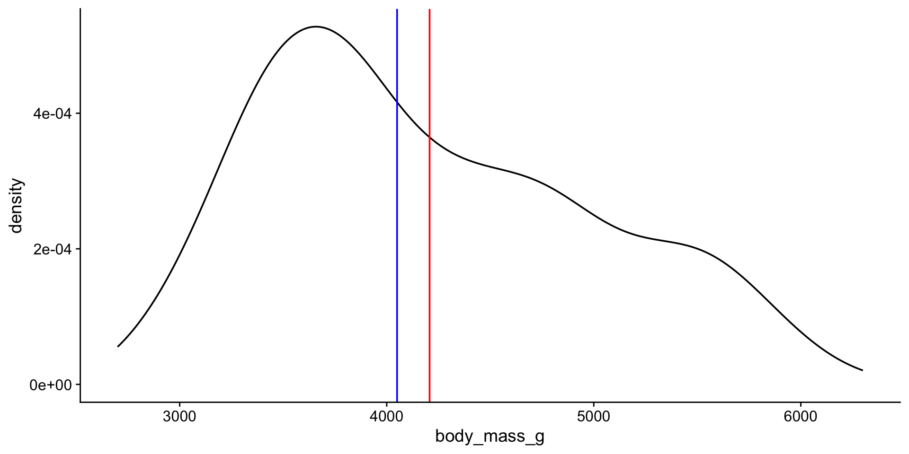
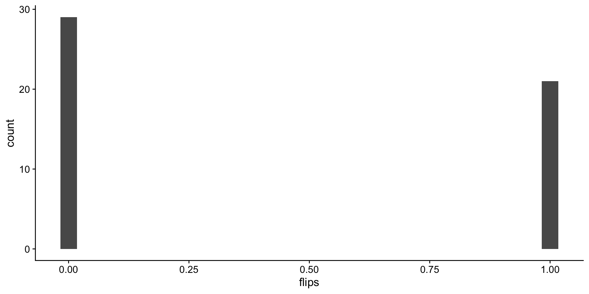
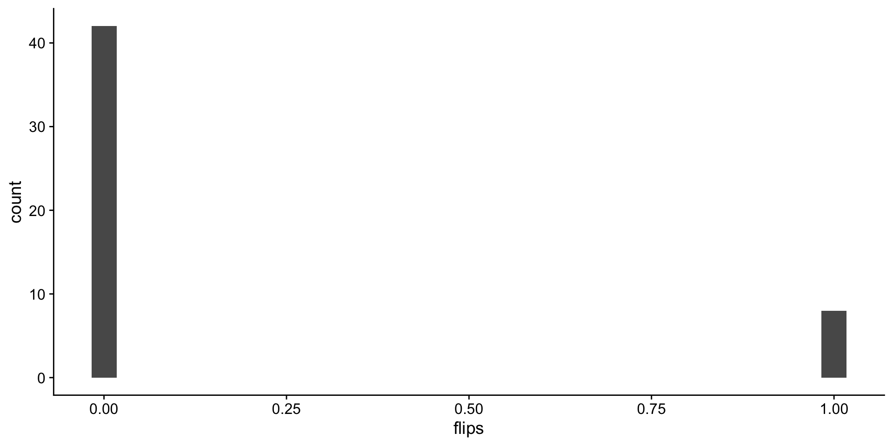

Discrete variable: numeric variables that have a countable number of values between any two values - integer in R (e.g., number of mice, read counts).
Continuous variable: numeric variables that have an infinite number of values between any two values - numeric in R (e.g., normalized expression values, fluorescent intensity).
Categorical Variables
Nominal variable: (unordered) random variables have categories where order doesn’t matter - factor in R (e.g., country, type of gene, genotype).
Ordinal variable: (ordered) random variables have ordered categories - order of levels in R ( e.g. grade of tumor).
Distributions and probabilities
A distribution in statistics is a function that shows the possible values for a variable and how often they occur.
We can visualize this with a histogram or density plots as we did earlier.
We are going to start with simulated data and then use Palmer Penguins later.
Create a normal distribution
Assume that the test scores of a college entrance exam fits a normal distribution. Furthermore, the mean test score is 76, and the standard deviation is 13.8.
d <-tibble(n1 =rnorm(n =500, mean =76, sd =13.8))head(d)
Probability is used to estimate how probable a sample is based on a given distribution.
Probability refers to the area under curve (AUC) on the distribution curve. The higher the value, the more probable that the data come from this distribution.
What is the probability of students scoring 85 or more in the exam?
s <-85pnorm(s, mean =76, sd =13.8, lower.tail = F)
[1] 0.2571445
What is the probability of students scoring 85 or less in the exam?
pnorm(s, mean =76, sd =13.8, lower.tail = T)
[1] 0.7428555
Prob of 85 or more is equivalent to the area under the curve to the right of 85.
Likelihood is used to estimate how good a model fits the data. Likelihood refers to a specific point on the distribution curve. The lower the likelihood, the worse the model fits the data.
What is the likelihood of students scoring 85 on the exam?
l <-dnorm(s, mean =76, sd =13.8)l
[1] 0.02337069
The likelihood is the y-axis value on the curve when th x-axis = 85.
Yikes! Some of these column names have horrible formatting e.g. spaces, slashes, parenthesis. These characters can be misinterpreted by R. Also, long/wonky names makes coding annoying.
ggplot(data = p,aes(x = body_mass_g)) +geom_density() +geom_vline(xintercept = mn, color ="red") +geom_vline(xintercept = md, color ="blue") +theme_cowplot()

Other descriptive statistics
Min: minimum value.
Max: maximum value.
q1, q3: the first and the third quartile, respectively.
IQR: interquartile range measures the spread of the middle half of your data (q3-q1).
Quick way to get all these stats:
p |>get_summary_stats(body_mass_g, type ="common")
# A tibble: 1 × 10
variable n min max median iqr mean sd se
<fct> <dbl> <dbl> <dbl> <dbl> <dbl> <dbl> <dbl> <dbl>
1 body_mas… 333 2700 6300 4050 1225 4207. 805. 44.1
# ℹ 1 more variable: ci <dbl>
p |>get_summary_stats(body_mass_g, show =c("mean", "median"))
# A tibble: 1 × 4
variable n mean median
<fct> <dbl> <dbl> <dbl>
1 body_mass_g 333 4207. 4050
Statistics describing spread of values
Variance: the average of the squared differences from the mean
The variance measures the mathematical dispersion of the data relative to the mean. However, it is more difficult to apply in a real-world sense because the values used to calculate it were squared.
The standard deviation, as the square root of the variance, is in the same units as the original values, which makes it much easier to work with and interpret w/respect to the mean.
Other stats describing spread of data
Confidence Interval (ci): a range of values that you can be 95% (or x%) certain contains the true population mean. Gets into inferential statistics.
Get more descriptive stats easily
p |>get_summary_stats(body_mass_g, show =c("mean", "median", "sd"))
# A tibble: 1 × 5
variable n mean median sd
<fct> <dbl> <dbl> <dbl> <dbl>
1 body_mass_g 333 4207. 4050 805.
by species
p |>group_by(species) |>get_summary_stats(body_mass_g, show =c("mean", "median", "sd"))
# A tibble: 3 × 6
species variable n mean median sd
<chr> <fct> <dbl> <dbl> <dbl> <dbl>
1 Adelie body_mass_g 146 3706. 3700 459.
2 Chinstrap body_mass_g 68 3733. 3700 384.
3 Gentoo body_mass_g 119 5092. 5050 501.
by species and island
p |>group_by(species, island) |>get_summary_stats(body_mass_g, show =c("mean", "median", "sd"))
# A tibble: 5 × 7
species island variable n mean median sd
<chr> <chr> <fct> <dbl> <dbl> <dbl> <dbl>
1 Adelie Biscoe body_mass_g 44 3710. 3750 488.
2 Adelie Dream body_mass_g 55 3701. 3600 449.
3 Adelie Torgersen body_mass_g 47 3709. 3700 452.
4 Chinstrap Dream body_mass_g 68 3733. 3700 384.
5 Gentoo Biscoe body_mass_g 119 5092. 5050 501.
Normal distribution
The mean, mode, and median are all equal.
The distribution is symmetric about the mean—half the values fall below the mean and half above the mean.
The distribution can be described by two values: the mean and the standard deviation.
Bell curve or standard normal:
Is a special normal distribution where the mean is 0 and the standard deviation is 1.
Normal distribution metrics
Skewness is a measure of the asymmetry around the mean. 0 for bell curve.
Normal distribution metrics
Kurtosis is a measure of the “flatness” of the distribution.
quantile-quantile plot to compare an empirical distribution to a theoretical distribution.
Quantile is the fraction (or percent) of points below the given value. For example, the 0.2 (or 20%) quantile is the point at which 20% percent of the data fall below and 80% fall above that value.
# A tibble: 3 × 4
species variable statistic p
<chr> <chr> <dbl> <dbl>
1 Adelie body_mass_g 0.981 0.0423
2 Chinstrap body_mass_g 0.984 0.561
3 Gentoo body_mass_g 0.986 0.261
Ok so Chinstrap and Gentoo look normal. Not sure about Adelie. We may want to consider using non-parametric test to compare mean body weights between Adelie vs Chinstrap or Gentoo.
Central limit theorem
The central limit theorem states that if you take sufficiently large samples from a population, the samples’ means will be normally distributed, even if the population isn’t normally distributed.
Back to coin flips!! 50 flips, one round.
n <-50# make a hundred fair and unfair flipsf <-tibble(fair =rbinom(n = n, size =1, prob = .5),unfair =rbinom(n = n, size =1, prob = .2)) |>pivot_longer(cols =c("fair", "unfair"),names_to ="cheating",values_to ="flips" )
flip distributions
Look at the distribution of fair flips
ggplot(data = f |>filter(cheating =="fair"),aes(x = flips)) +geom_histogram() +theme_cowplot()
`stat_bin()` using `bins = 30`. Pick better value
`binwidth`.

Look at the distribution of unfair flips
ggplot(data = f |>filter(cheating =="unfair"),aes(x = flips)) +geom_histogram() +theme_cowplot()
`stat_bin()` using `bins = 30`. Pick better value
`binwidth`.

Now lets sample means
let’s do 100 round of 50 flips and take the average of each round.
remember the size that i told you to ignore last class!